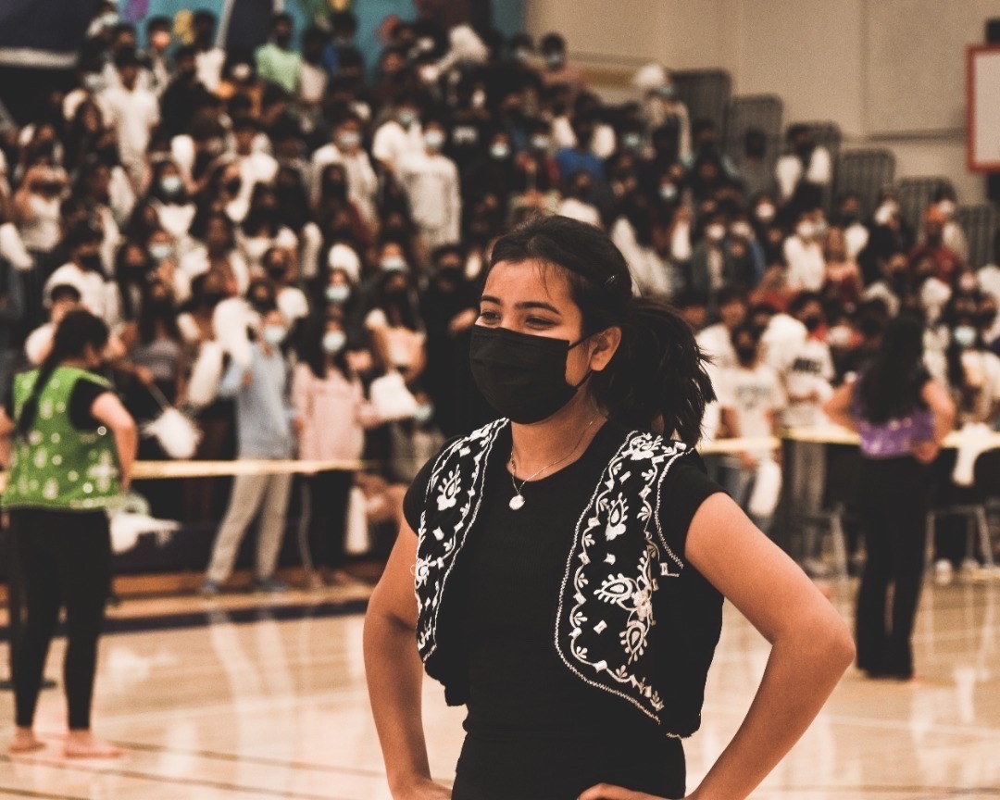
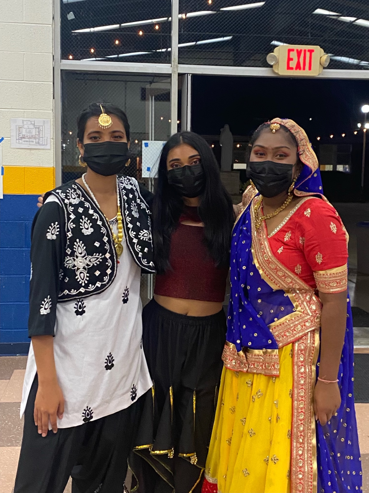
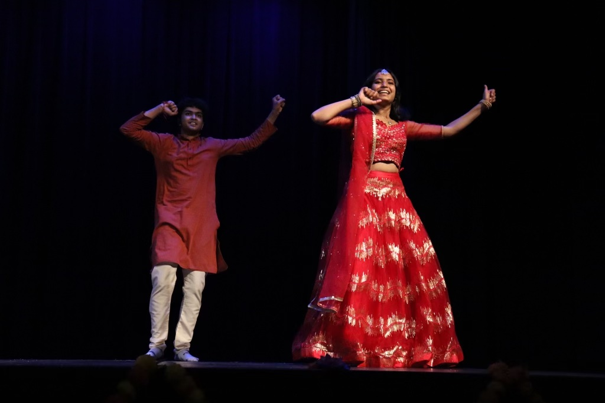
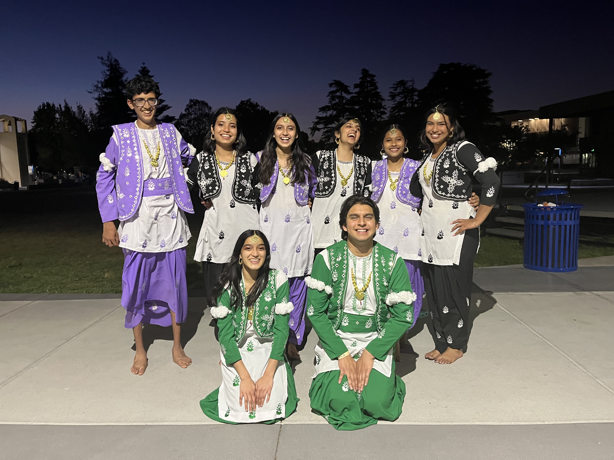
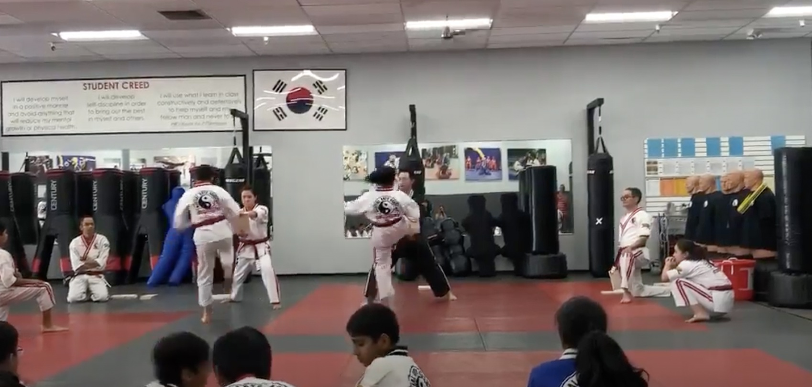
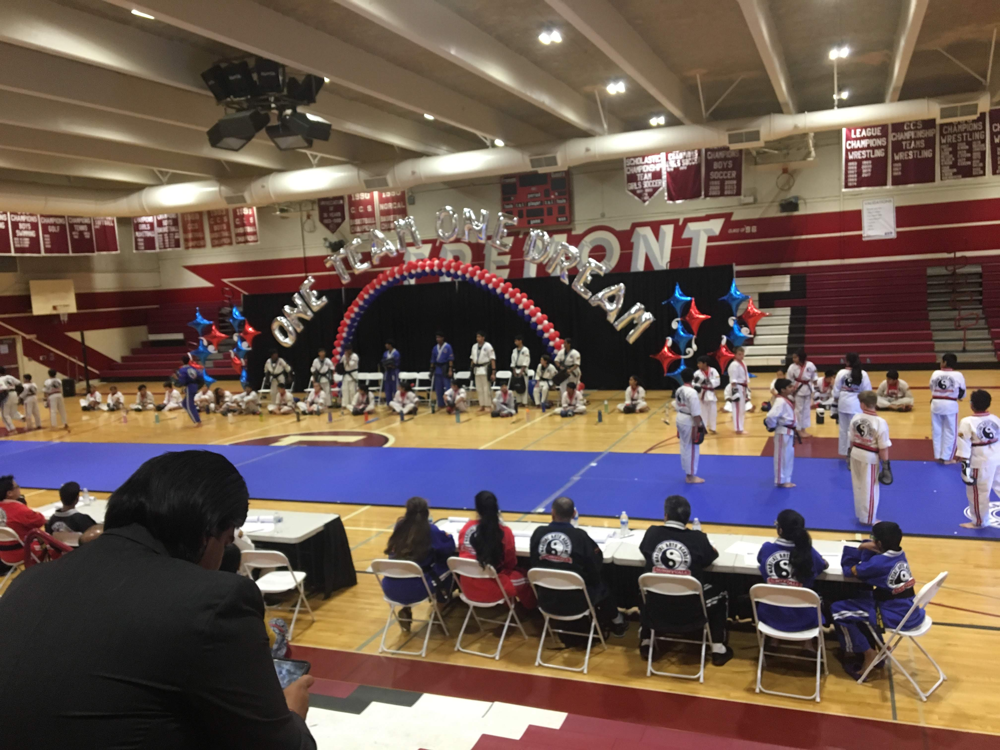
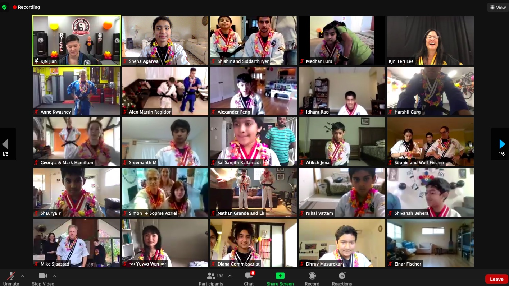
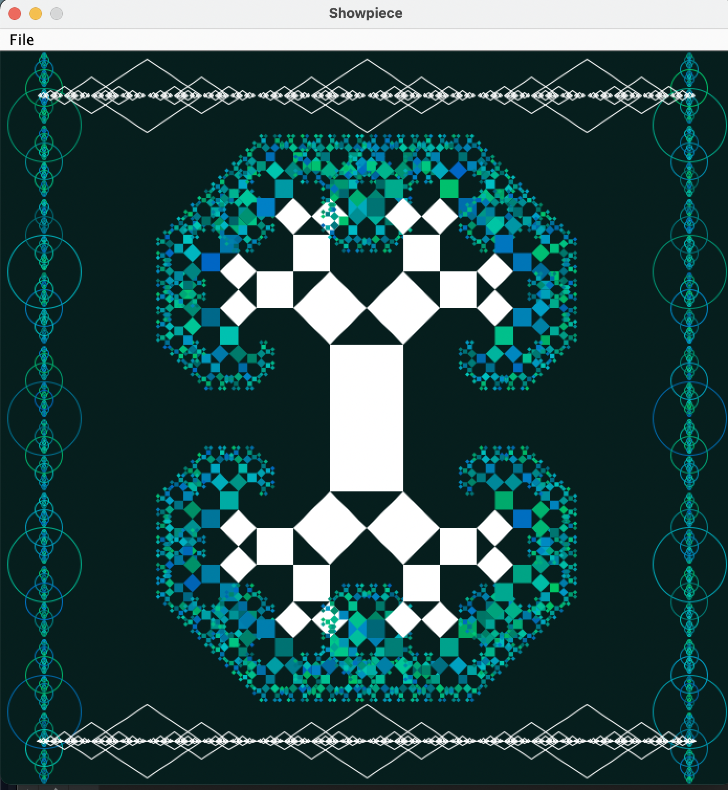
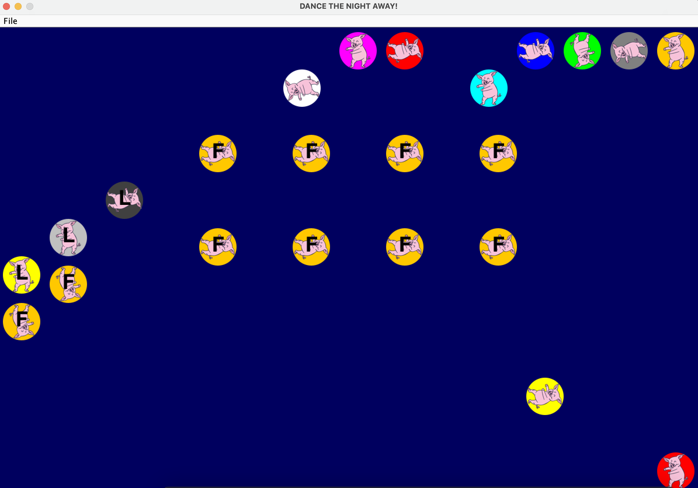
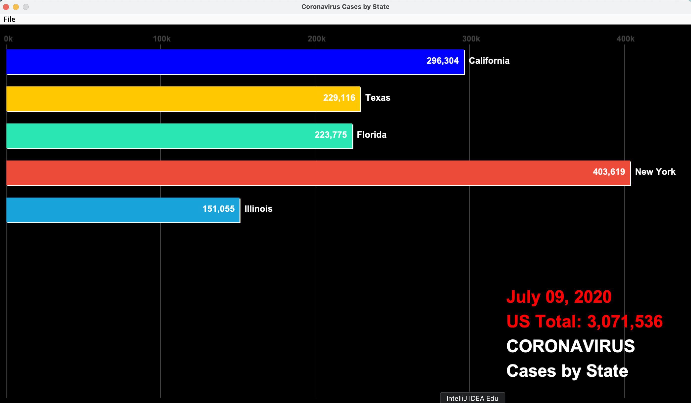

I first started to dance when I was six years old and I immediately fell in love with it and the way it made me feel. I have practiced multiple different styles of dance including Hip Hop, Bollywood, Indian folk dance, and Bhangra. For the last few years, I have been on my school's Bhangra Team where we choreograph steps and perform at numerous competitions.
   Pursuing self discipline and focus got me to 2nd-degree blackbelt in taekwondo and have been training for the last seven years. Aside from training, I also lead classes at my dojo and help judge during belt testings.
  Along with these hobbies, I started to code while I was 9 and fell in love with what’s possible with a few lines of code. Recently I have been applying my knowledge in various coding languages such as Java, Python, and HTML to create solutions to real-life problems using Data Science. I love mentoring and tutoring my peers and other students in subjects including Math, Computer Science, and Environmental Science.
  